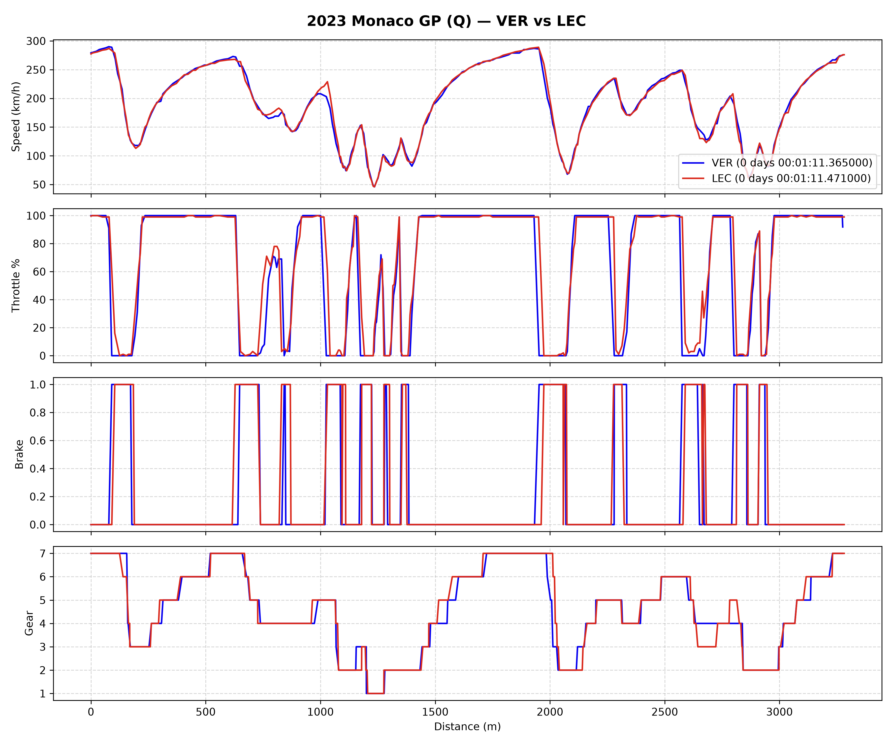
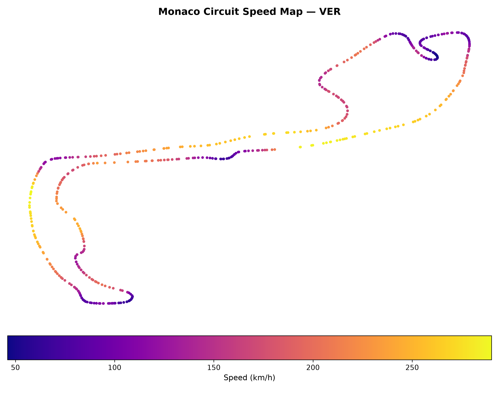

🏎️ F1 Telemetry & Speed Profile Plotter
A Python data pipeline using the FastF1 API to analyze lap telemetry and generate 2D spatial track heatmaps.


- Lap Telemetry Traces: Side-by-side analysis of Speed, Throttle %, Brake pressure, and Gear usage.
- 2D Track Heatmaps: Renders circuit layouts using GPS coordinates with a continuous speed colormap (
plasma). - Local Caching: Integrated FastF1 file caching to minimize API fetch times on repeat runs.